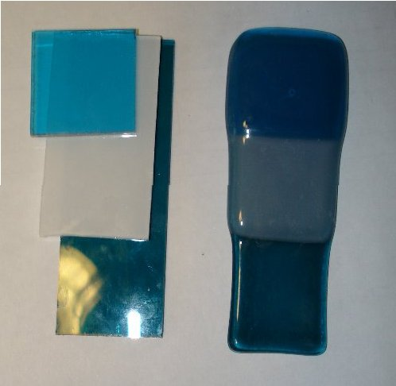

|  | Kuvassa on sama lasi ennen ja jälkeen kohofuusauksen.
Yksinkertainen osa (3 mm) on kaventunut ja reunat pullistuneet koiranluulle.
Syväfuusauksessa ero olisi vielä suurempi. Yksinkertainen lasi sopii hyvin pintafuusaukseen.
Kaksinkertainen osa (6 mm) on säilyttänyt leveytensä. Se olisi kestänyt syväfuusauksenkin ilman että koko muuttuu. Pinta jatkuu tasainena reunan pyöristykseen saakka. Kolminkertainen osa (9 mm) on levinnyt laajemmaksi. Pinta on tämänkokoisessa lasissa kaareva, reunat ovat valuessaan ohentuneet 6 mm paksuiseksi kun keskusta ei ole ehtinyt tasoittua vaan on lähes 9mm paksu. Yleensä kolminkeratinen lasi pitää padota esimerkisi kuitupaperin suikaleilla. |
| paluu Paksuus1 -sivulle |